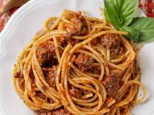

Odin Recipes: Spaghetti!

Description:
Everyone loves a good spaghetti, right? It's a great way to feed a crowd and a perfect dish to bring to a potluck. It freezes well. It reheats well. Leftovers will keep you happy for days.
Ingredients
- Spaghetti.
- Tomato's sauce.
- Meatballs.
Steps:
- Cook spaghetti for 15-20 minutes..
- Then pour tomato's sauce over spaghetti.
- Put a lot of meatballs over them.
- Profit.